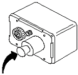

Turn on the power to the Control Unit. The green power LED should glow.
| NOTE: | For the next step, the Remote Sensor Module must contain a Sensor Retrofit Kit 46-320936P1. If missing, order and install before continuing. |
Screw the Aerosol Gas Calibration Adapter 2173691 into the gas sensing port (which contains the retrofit block) located on the front cover of the Remote Sensor Module. (See Illustration 31.)
Illustration 31: Oxygen Monitor

Using the aerosol can marked 20.9% Oxygen found in the Oxygen Calibration Kit, remove the cap and insert the top of the can with the nozzle inserted into the Aerosol Calibration Adapter. (See Illustration 32 through Illustration 34.)
Snap the can onto the plastic fingers of the adapter by attaching the can at an angle.
Apply moderate force until the aerosol can snaps into place. When properly attached, the automatic gas discharge will be audible.
Illustration 32: Attaching Calibration Tool to Oxygen Sensor Port

Illustration 33: Insert Oxygen Can into Calibration Tool

Illustration 34: Apply Moderate Force Until Can Snaps Into Place

| NOTE: | Because of the annoying and possibly alarming sound made by the Sonalert, it may be disabled during testing by disconnecting its red wire. Be sure to reconnect the wire after testing. Attaching a 10K resistor in series with the Sonalert permits audible alarm operation at a reduced volume. |
Wait approximately 15 seconds before removing the 20.9% Oxygen aerosol can.
Verify the meter reads 20.9% oxygen as shown in Illustration 35.
Remove the aerosol can by tilting it at an angle until the container snaps free from the calibration adapter, or leave it in place for continuous gas discharge. (Continuous discharge offers the highest accuracy while gas is available in the aerosol container.)
If removed, retain for possible repeated tests.
Using the aerosol can marked 17.0% Oxygen found in the Oxygen Calibration Kit, remove the cap and insert the top of the can with the nozzle directed into the Aerosol Calibration Adapter. (See Illustration 32 through Illustration 34.)
Snap the can onto the plastic fingers of the adapter by first attaching the can at an angle.
Apply moderate force until the aerosol can snaps into place. When properly attached, gas automatically discharging can be heard.
Refer to Illustration 35. With the 17% oxygen aerosol attached to the Remote Sensor Module, the following should occur after approximately 15 seconds:
Meter reading on the Control Unit should decrease to less than 18%.
Audible alarm should sound on the Control Unit and Remote Sensor Module.
Red alarm LED should blink on the Control Unit and Remote Sensor Module.
Illustration 35: Control Unit Meter

Disconnect the 17.0% aerosol container from the Remote Sensor Module.
Disconnect the Aerosol Calibration Adapter to allow the ambient air with normal oxygen content to contact the sensor.
NOTE: Unscrewing the Aerosol Calibration Adapter from the Remote Sensor Module allows rapid diffusion of ambient oxygen to reach the sensor cell. Unscrew adapter only if aerosol container is removed to prevent unnecessary gas waste. Retain the 17% aerosol container for possible repeated tests.
Press the Relay Release pushbutton on the front cover of the Control Unit. The following should occur:
Meter on the Control Unit should read approximately 20.9%.
Audible alarms should stop sounding.
Red alarm LEDs should stop blinking and stay off.
If the system responds correctly as described, calibration is complete. Otherwise, refer to Direction 15336, Oxygen Monitor Subsystem (Revision 3 or higher) for the calibration procedure.
Record the date of the Oxygen Monitor functional check in the Site Log.